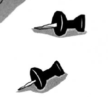

不追求大而全，只做打开就能用、用久也不烦的小工具。 目前主要是菜单栏上的两件事：看 AI 花了多少，和把菜单栏收干净。
都是 macOS 菜单栏上的小工具，免费、本地优先。
AI 的用量和花费，瞄一眼就够。统一统计 DeepSeek 官方多账号、OpenCode、Ollama 和自定义来源。
打开介绍页 →
更优雅的菜单栏开关。把不常用的菜单栏图标折叠起来，需要时再展开，保持桌面清爽。
GitHub →
还在想。如果你有想要的小工具，可以在 GitHub 或爱发电留言。
github.com/xiaoan223 · 源代码、Issue 和 Release 都在这里。
如果这些小工具有帮到你，可以在 爱发电 请我喝杯咖啡。完全自愿，不换取任何功能或服务。